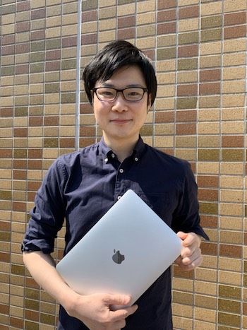

- 教授 西村 亮平(にしむら りょうへい)
- 准教授 中川 貴之(なかがわ たかゆき)
- 特任助教 藤田 直己(ふじた なおき)
- 特定研究員 加藤 大貴(かとう だいき) 
- D4
- D3
- D2
- D1
- B6
- B5
- B4
東京大学, 大学院農学生命科学研究科(農学部), 教授

東京大学, 大学院農学生命科学研究科(農学部), 准教授
東京大学, 大学院農学生命科学研究科(農学部), 特任助教
東京大学, 大学院農学生命科学研究科(農学部), 特定研究員
衛藤翔太郎
陳 君研
林本考緒道
牟田佳那子
吉本 翔
池田凡子
羽生 航
品田真央
井上
高谷
富永晃世
岡田海人
曽我恭花
中村英樹
小寺優佳
藤田昌祐
李捷生
ゼミスケジュール
全体ゼミ(研究進捗)：毎月末水曜日
各班ゼミ(文献・進捗)：麻酔班(毎週金曜日)、再生班(毎週金曜日)、腫瘍班(毎週水曜日)
臨床ゼミ(文献・レビュー)：隔週金曜日
年間行事等
4月歓迎会
5月専攻内ソフトボール大会
7月研究室旅行
12月卒業論文発表会(学部生)、博士論文提出(大学院生)
1-2月学位審査会(大学院生)
3月卒業式、送迎会